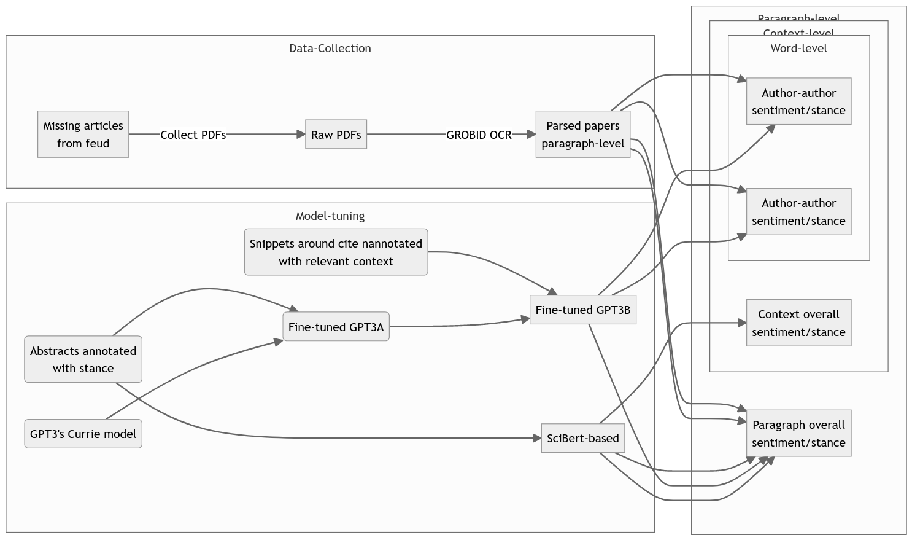

The Science of Scientific Feuds
Original motivation: “scale-free networks are rare”
Even in science we enjoy gossiping and heated debates, until someone gets hurt:
[…] poor graduate student (Dodds, referring to the graduate student who found themselves caught in the middle of the feud between Clauset and Barabasi).
In a similar vein:
Returning from a scientific meeting reminded me again of the current bias against controversy in scientific discussions. Maybe as a result of the hazing-like practices in some circles (math, statistics, old Sovietic academic institutions), many now appear to abhor public disagreement on scientific matters. This is sad, as there is a long historic tradition of scientific controversy involving giants of both the distant and the recent past. Newton was involved in heated discussions on the nature of space and time with Descartes. Herbert Simon had a wonderfully heated exchange with Benoit Mandelbrot about the origin of the rank-size law.
I think that heated scientific disputes have an important role in clarifying to the scientific community at large the degree of certainty on a given matter. But like anything in life, one must be aware of the right way to do something. Older, more established scientists must not attack younger less experienced colleagues at meetings. Moreover, one must be driven by a desire to uncover the best answer, regardless of the fact that the best answer may not be the one one was exposing.
—Luis Amaral
General Idea
- According to the “rich-get-richer” principle, successful authors tend to receive a disproportionate amount of attention.
- If those individuals happen to be on the wrong side of history, a scientific debate can continue long after it should have been settled.
- Negative debates, or scientific feuds, can be particularly detrimental to groups striving to establish themselves in science, such as women, who are still cited less frequently for equal work than men.
- I use feuds to to distinguish “good” fom “bad” debates. Similar to toxicity in social media, I take feuds to be controversies that make marginalized groups in science leave the table.
Methodological motivation
Hi, do you have a moment to talk about our lord and savior,
Jesus ChrisChatGpt.
prompt = f"""
Identify the following items from the review text:
- Stance towards the unique author that is delimited by the
<cite> tag </cite> (ranging from -1 to 1 where -1=very
negative stance; 0=neutral stance; 1=very positive stance)
- Identify key words that explain the stance.
- Target citation name is the author within the tag
Format your response as a JSON object with "Stance",
"key words" and "target" as the keys.
text: '''By the 1960's Darwin's thoughts on this topic had been
rephrased in terms of the efficacy of group selection. The best
arguments and mathematical models at that time, e.g., Maynard Smith
[20] , Williams [31] , implied that group selection, while
theoretically possible, was much too weak to have an effect in the
natural world. Explanatory theories like "the selfish gene",
Williams [31] , Dawkins [4] and "kin selection", Hamilton [10] ,
Maynard Smith [20] , reinforced those arguments. Later, Wilson
[32] , Sober and Wilson <cite>[27]</cite>, Wilson and Wilson [33] ,
and others gradually reopened the debate, being more careful about
the way group selection was defined. The new group selection
proponents realized that group selection (properly defined) was a
potent evolutionary force, however they lacked mathematical models
to help make their cases [...] phenomenon works.'''
"""
print(get_completion(prompt)){
"Stance": 0.5,
"key words": ["potent", "evolutionary force", "reopened the debate",
"gradually", "careful"],
"target": "Sober and Wilson"
}ü§Ø
Wait, why is it impressive?
- The sentence is convoluted. There are no obvious happy words to help us out.
- The citation context is spread across multiple sentences.
- No data pre-processing was used to achieve this result.
- This is formatted in JSON for your data analysis.
Danger
Q: Can we use GPT in science?
A: Sure.
Q: But is this scientific?
A: What is science?
Q: Seriously. At least can we scale that up? Are we on the brink of real NLP?
A: Well yes and no. It is complicated. This talk is partly about that too.Research Questions
Despite the efforts of researchers to understand how citations are used through stance detection and citation context analysis (CCA), we still have a long way to go in identifying the essential and meaningful components of scientific feuds. Based on that:
BQ1:Can we identify essential meaningful components of scientific feud through a combination of CCA, stance detection, and ousiometrics?!RQ1:Can we fine-tune GPT3.5 to effectively and consistently extract the relevant context of a citation?RQ2:Can we fine-tune the model inRQ1to also identify the stance of that context?RQ3:Given a good model inRQ1andRQ2, can we then extract the dictionary that GPT3 has learned to apply to do ousiograms and allotaxonometry?
The question we really want to answer:
BQ2: If we can measure scientific feuds, what impact do the language and communication tactics used to support or challenge the work of others have on the advancement of scientific research and the representation of marginalized groups in science?
Methods
We chose the group selection feud as our case study to study scietific feud. Why?
- People have strong opinions about whether groups can be the target of natural selection.
- This feud has endured for the past 60 years, making it an interesting case study to explore using our methods. We can ask how were feuds different from today.
- We use the zoologist
Wynne-Edwardsas seed for our feud. If people cite him, they are part of the feud (Yes, I know this is not ideal).
Data pipeline

2-step fine-tuning process
- Fine-tune on detecting relevant context.
- Fine-tune on detecting stance.

p.s. We needed annotated data for both tasks. Luckily, https://github.com/DominikBeese/DidAIGetMoreNegativeRecently and https://github.com/allenai/multicite just released annotated corpus on stance detection and citation context analysis, respectively. Never underestimate those contributions!
Results
An exploration of citation context
Disclaimer
Right now, my experiments with fine-tunning did not give the expected results. In this talk, i’ll focus on my exploratory data analysis and GPT3.5 to give a glimpse of what NLP could be.
How many citations can someone fit in a sentence?
Code
df_count[['year', 'n', 'rank']].head(5)| year | n | rank | |
|---|---|---|---|
| 0 | 1977-01-01 | 60 | 1.0 |
| 1 | 2020-01-01 | 56 | 2.0 |
| 2 | 2008-01-01 | 52 | 3.0 |
| 3 | 2011-01-01 | 48 | 4.0 |
| 4 | 2007-01-01 | 45 | 5.0 |
Idea
We seem to be including more and more citations these days, but it could be because we have more background to provide. Also not all types of citations necessitate the same number of citations in a single sentence.
Relationship between stance and citation types

How does citation types change over time?

- Is this something special to a feud or it is normal behaviors for a well cited paper?
A glimpse of the future
Although they don’t look like much, I want to argue that the two next figures are very impressive. Mostly because:
- Sentence-embedding based model are not be capable of performing these tasks.
- Human still are needed to fullfil those tasks, and they are often labor-intensive.
Retrieval of citation contexts spanning multiple sentences
Idea
This is exciting because it means we can train a Large language model to focus on specific, more specialized tasks and obtain predictable output.
Extracting important positive and negative words from stance detection
gpt3.5 to detect stance and extract key words explaining the stance. It was better at predicting words that could explain negative stances than positive ones. Here this is just a proof of concept, as it is expansive to run at a large scale.
Idea
This offers a glimpse into the potential for automating the creation of culture-specific dictionaries of positive and negative words.
Conclusion
- Citation context analysis and stance detection is hard.
- There has been excellent work on the subject without Large language model. A good embedding space or a dictionary can do a lot to guide your investigation.
- But traditional methods are not enough to identify the essential meaning of scientific feuds.
- Large language models have the potential to extract nuanced interactions, if you know how to talk to them.